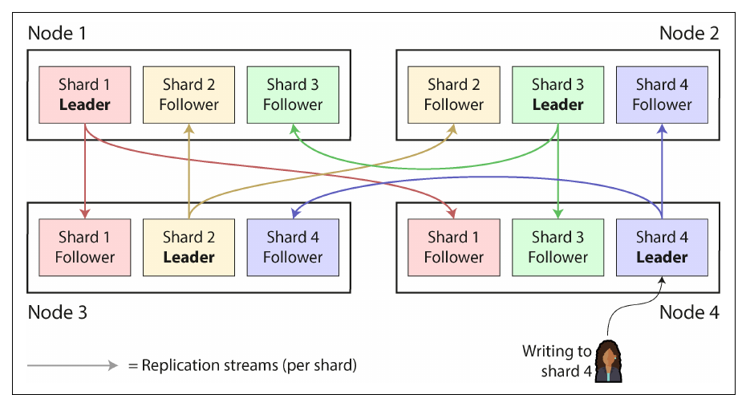
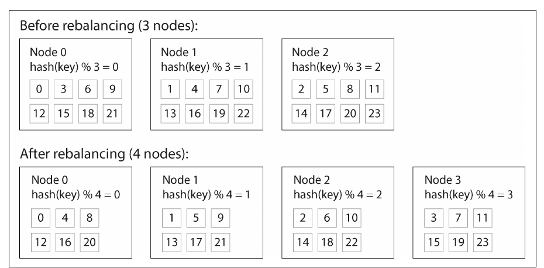
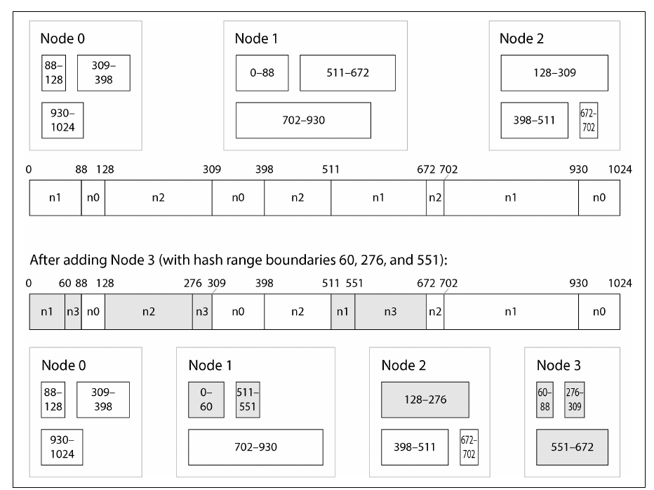
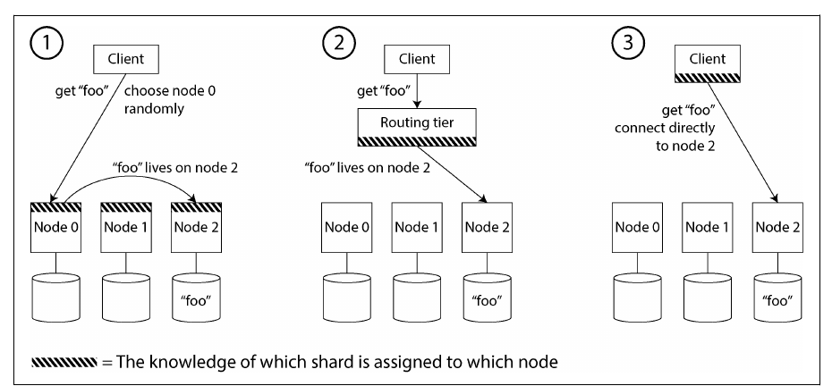
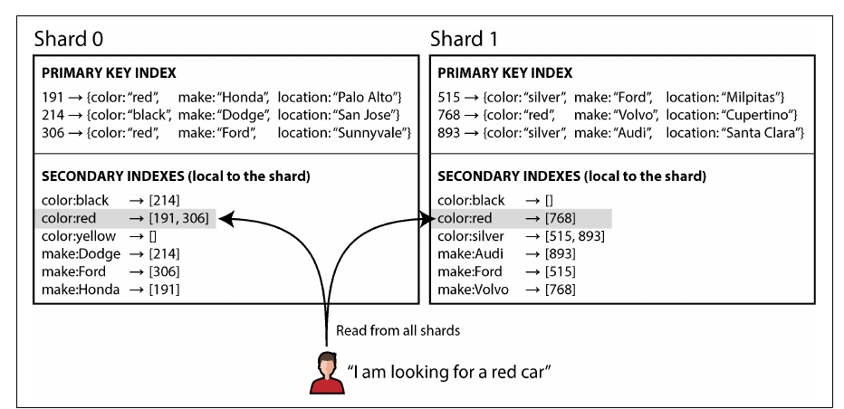
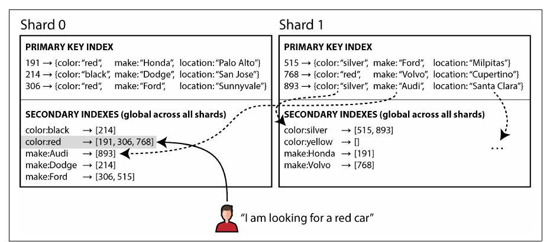

فصل ۷ · صص. ۲۵۱–۲۷۶
مفهوم sharding
Sharding
Designing Data-Intensive Applications, 2nd Edition
وقتی داده یا بار کوئری از یک ماشین بیشتر شود، به shardها، یا partitionها، تقسیم میشود؛ هر کدام یک دیتابیس کوچک مستقل که معمولاً replicate هم میشود. هدف پخش یکنواخت داده و بار و پرهیز از hot spot است. فصل sharding بر اساس key range، با range scan کارآمد و خطر hot spot روی کلیدهای پشت سر هم، را با sharding بر اساس hash کلید، با پخش یکنواخت و بدون range scan کارآمد، مقایسه میکند؛ از جمله اینکه چرا hash mod N ایدهی بدی است و تعداد ثابت shard، sharding با hash range و consistent hashing چطور با جابهجایی کم داده rebalance میکنند. بعد به بارهای نامتوازن، rebalancing خودکار در برابر دستی، request routing، که اغلب از یک coordination service کمک میگیرد، و دو راه shard کردن secondary index، یعنی local و global، میپردازد.
فهرست خود فصل (از فهرست مطالب کتاب)
- مزیتها و عیبهای sharding (ص. ۲۵۳)
- مفهوم sharding برای multitenancy (ص. ۲۵۴)
- مفهوم sharding برای دادهی key-value (ص. ۲۵۵)
- مفهوم sharding بر اساس key range (ص. ۲۵۶)
- مفهوم sharding بر اساس hash کلید (ص. ۲۵۸)
- بارهای نامتوازن و کم کردن hot spot (ص. ۲۶۳)
- عملیات: rebalancing خودکار در برابر دستی (ص. ۲۶۴)
- مفهوم request routing (ص. ۲۶۵)
- مفهوم sharding و secondary index (ص. ۲۶۸)
- مفهوم local secondary index (ص. ۲۶۸)
- مفهوم global secondary index (ص. ۲۷۰)
- جمعبندی (ص. ۲۷۱)
از کتاب
مقدمه
یک دیتابیس توزیعشده داده را به دو شکل پخش میکند: replication، یعنی کپیهای همان داده در فصل ۶، و sharding، یعنی تقسیم دادهای که برای یک node خیلی بزرگ است یا خیلی سریع نوشته میشود به shardها، یا partitionها، که هر رکورد دقیقاً به یکی از آنها تعلق دارد. این دو با هم ترکیب میشوند: هر shard replicate میشود و یک node ممکن است leader بعضی shardها و follower بعضی دیگر باشد؛ شکل ۷-۱ (صص. ۲۵۱–۲۵۲).


اسمهای shard (ص. ۲۵۲): partition در Kafka، range در CockroachDB، region در HBase و TiDB، vBucket در Couchbase، vnode در Riak، token-range در Cassandra، و tablet در Bigtable، YugabyteDB و ScyllaDB. در PostgreSQL واژهی partitioning یعنی تقسیم یک جدول به چند فایل روی یک ماشین، برخلاف sharding که بین ماشینهاست. واژهی «shard» شاید از کریستال شکستهی بازی Ultima Online آمده باشد، یا از یک سرواژهی گمشدهی دههی ۱۹۸۰. هیچ ربطی به network partition در فصل ۹ ندارد.
امتحان کنید
فصل ۷ در طول یک pipeline داده
باز کردن در صفحهی کامل ↗ · این شبیهسازی مدل خود vault از سازوکاری است که کتاب شرح میدهد.
از کتاب
مزیتها و عیبهای sharding
مفهوم sharding ابزار اصلی horizontal scaling برای حجم داده و throughput نوشتن است؛ throughput خواندن را بهتنهایی میشود با read replica حل کرد (ص. ۲۵۳). سنگین است، پس اگر یک ماشین از پسش برمیآید از آن پرهیز کنید (صص. ۲۵۳–۲۵۴):
| هزینه | چرا |
|---|---|
| انتخاب partition key | رکوردهایی که کلید یکسان دارند در یک shardاند؛ پیدا کردن رکورد بدون کلید یعنی گشتن همهی shardها؛ تغییر طرح سخت است |
| دادهی relational | secondary index و join بین shardها پخش میشوند |
| نوشتن بین shardها | تراکنش توزیعشده لازم دارد: کندتر، و شاید یک گلوگاه؛ فصل ۸ |
بعضی سیستمها داخل یک ماشین shard میکنند: یک process تکthread برای هر core یا هر بانک حافظهی NUMA؛ مثل Redis، VoltDB و FoundationDB (ص. ۲۵۴).
warehouse در reference stack دو replica دارد و هیچ shardی ندارد: هر node کل داده را دارد.
?نوبت شما · حجم داده سه برابر شده و داشبوردها کند شدهاند. کسی پیشنهاد میدهد warehouse را shard کنید. پیش از قبول چه میپرسید؟دیدن پاسخ
اول اینکه مشکل حجم داده و throughput نوشتن است یا فقط throughput خواندن؛ دومی را replica و کوئری بهتر حل میکنند (ص. ۲۵۳). بعد هزینهها: کدام partition key، و joinهای Silver که منبعها را روی شناسههای مشترک به هم وصل میکنند آیا بین shardها پخش میشوند (صص. ۲۵۳–۲۵۴). اگر یک ماشین بزرگتر کافی است، shard نکنید.
از کتاب
مفهوم sharding برای multitenancy
محصولات SaaS multitenant هستند: هر tenant، یعنی هر مشتری، یک مجموعه دادهی مستقل دارد؛ یک shard برای هر tenant، یا گروهی از tenantهای کوچک، به شکل دیتابیسهای جدا، حتی embedded، یا بخشهای مدیریتشدهی یک دیتابیس منطقی (ص. ۲۵۴).
| مزیت (صص. ۲۵۴–۲۵۵) | |
|---|---|
| isolation منابع | کار گران یک tenant بقیه را کند نمیکند |
| isolation دسترسی | احتمال اینکه یک باگ access control داده را بین tenantها نشت دهد کمتر است |
| معماری cell-based | سرویسها و storage برای مجموعهای از tenantها یک cell مستقل میسازند و خطاها داخل همان میمانند |
| backup و restore برای هر tenant | حذف اشتباهی یک tenant را بدون دست زدن به بقیه برگردانید |
| رعایت مقررات | export یا حذف دادهی یک نفر یعنی کار روی یک shard |
| محل نگهداری داده | shard یک tenant را در حوزهی قضایی لازم بگذارید |
| ارائهی تدریجی schema | هر بار یک tenant را migrate کنید، که انجامش به شکل تراکنشی سخت است |
چالشها (ص. ۲۵۵): tenantی که برای یک node خیلی بزرگ است و باید داخل خودش shard شود؛ shard جدا برای هر tenant کوچک خیلی گران است، اما tenantهای گروهبندیشده با رشدشان باید جابهجا شوند؛ و قابلیتهای بین tenantها به join بین shardها تبدیل میشوند.
در reference stack دادهی یک مشتری در همهی partitionهای ماهانهی جدولهای warehouse پخش است، نه در یک shard.
?نوبت شما · یک مشتری درخواست حذف داده میدهد. چرا این کار در این warehouse گرانتر از یک دیتابیس multitenant با shard برای هر tenant است؟دیدن پاسخ
در طرح multitenant، حذف دادهی یک نفر یعنی کار روی یک shard (صص. ۲۵۴–۲۵۵). اینجا ردیفهای آن مشتری در همهی partitionهای ماهانه و همهی لایهها هستند، پس حذف یک mutation است که باید همهی partitionها را بازنویسی کند؛ partition key، یعنی ماه، برای خواندن انتخاب شده، نه برای حذف بر اساس مشتری.
از کتاب
مفهوم sharding برای دادهی key-value
هدف: پخش یکنواخت داده و کوئریها، تا ۱۰ node ده برابر داده و throughput را تحمل کنند، و rebalance کردن وقتی nodeها میآیند و میروند. عدم توازن را skew میگویند؛ shardی که بار نامتناسب دارد hot shard یا hot spot است؛ و یک کلید تکی خیلی پرکار hot key است (صص. ۲۵۵–۲۵۶).
مفهوم sharding برای دادهی key-value
مفهوم sharding بر اساس key range
صص. ۲۵۶–۲۵۸هر shard یک بازهی پیوسته از کلیدها را دارد، مثل جلدهای دایرةالمعارف: جلد ۱ حرفهای A تا B است اما جلد ۱۲ حرفهای T تا Z، چون مرزها باید دنبال داده بروند؛ شکل ۷-۲. مرزها دستی تعیین میشوند، مثل Vitess، یا خودکار، مثل Bigtable، HBase، گزینهی range در MongoDB، CockroachDB، RethinkDB و FoundationDB؛ YugabyteDB هر دو را دارد. کلیدها داخل هر shard مرتباند، پس range scan آسان است؛ مثلاً یک ماه دادهی sensor.
- مفهوم hot spot روی کلیدهای پشت سر هم: با کلید timestamp، همهی نوشتنهای فعلی به shard «این ماه» میروند. با پیشوند شناسهی sensor نوشتنها را پخش کنید؛ آن وقت یک بازهی زمانی برای همهی sensorها یک کوئری برای هر sensor لازم دارد (ص. ۲۵۷).
- مفهوم rebalancing: اگر توزیع کلیدها را میدانید یک دیتابیس خالی را pre-split کنید، مثل HBase و MongoDB؛ بعداً shardهایی را که خیلی بزرگ میشوند split کنید، که پیشفرض HBase ۱۰ گیگابایت است، یا آنهایی را که بار نوشتن زیادی دارند، و shardهای کوچک را merge کنید؛ مثل بالای یک B-tree. هر split همهی دادهی shard را بازنویسی میکند، اغلب درست وقتی که shard زیر بار است (صص. ۲۵۷–۲۵۸).
جدولهای warehouse در reference stack بر اساس ماه partition میشوند، که شکلی از key range است، اما همه روی یک ماشین؛ مثل partitioning در PostgreSQL، نه sharding.
?نوبت شما · همهی insertهای هر ساعت به partition ماه جاری میروند. چرا این hot spot اینجا آنقدر که کتاب هشدار میدهد دردسر نیست، و این partitioning در عوض چه میدهد؟دیدن پاسخ
نگرانی کتاب این است که یک node همهی بار نوشتن را بگیرد (ص. ۲۵۷)؛ اینجا هیچ shardی نیست و هر نوشتن بههرحال روی هر دو replica میرود، پس partition جاری فقط فایلهای تازه را میگیرد. در عوض کوئریهایی که بر اساس بازهی زمانی فیلتر میکنند فقط partitionهای همان ماهها را میخوانند، یعنی همان range scan کارآمد key range (ص. ۲۵۶).
مفهوم sharding برای دادهی key-value
مفهوم sharding بر اساس hash کلید
صص. ۲۵۸–۲۶۳وقتی لازم نیست کلیدهای نزدیک کنار هم باشند، مثل شناسهی tenant، اول hash کنید. تابع hash لازم نیست رمزنگارانه باشد؛ MongoDB از MD5 و Cassandra و ScyllaDB از Murmur3 استفاده میکنند؛ اما باید بین processها پایدار باشد، برخلاف Object.hashCode() در Java یا Object#hash در Ruby (ص. ۲۵۸).
| طرح | چطور | اضافه کردن node | بدهبستان | چه کسی به کار میبرد |
|---|---|---|---|---|
| مدل hash mod N | hash(key) % N روی nodeها | بیشتر کلیدها جابهجا میشوند؛ در شکل ۷-۳ کلید ۳ به node ۳، کلید ۶ به node ۲ و کلید ۹ به node ۱ میرود | ساده، با rebalancing افتضاح | هیچکس |
| تعداد ثابت shard | مثلاً ۱٬۰۰۰ shard روی ۱۰ node؛ hash(key) % 1000؛ mapping shard به node را نگه دارید | shardهای کامل را به node تازه منتقل کنید؛ شکل ۷-۴؛ کلیدها هرگز shardشان عوض نمیشود | تعدادی با مقسومعلیههای زیاد انتخاب کنید؛ به ماشینهای بزرگتر shard بیشتری بدهید؛ از تعداد shard بیشتر node نمیشود داشت؛ resharding گران است؛ اندازهی shard با داده بزرگ میشود | Citus، Riak، Elasticsearch و Couchbase |
| مدل hash range | هر shard یک بازه از مقدارهای hash دارد؛ در مثال ۱۶ بیتی، ۰ تا ۱۶٬۳۸۳ به shard ۰ و …؛ شکل ۷-۵ | shardها را هر وقت لازم شد split کنید | تعداد shard خودش را تطبیق میدهد؛ کوئری بازهای روی partition key ممکن نیست، اما compound key ستونهای بعدی را داخل هر partition مرتب نگه میدارد | YugabyteDB، DynamoDB و گزینهای در MongoDB |
| نسخهی Cassandra و ScyllaDB | فضای hash به بازههایی با مرز تصادفی تقسیم میشود، چند بازه برای هر node؛ ۱۶ در Cassandra و ۲۵۶ در ScyllaDB؛ شکل ۷-۶ | node تازه بخشهایی از چند بازه را از چند node میگیرد | عدم توازنها با تعداد زیاد بازهها جبران میشوند | Cassandra و ScyllaDB |
| مدل consistent hashing، مثل rendezvous یا highest random weight، و jump | کلیدها یکنواخت پخش میشوند و کمترین تعداد کلید جابهجا میشود | node تازه کلیدهای تکی پراکنده از همهی nodeها را میگیرد | واژهی «consistent» اینجا ربطی به consistency در replica یا ACID ندارد | سیستمهای مختلف |
مفهوم data warehouseها همین کار را با واژههای دیگر میکنند: partition key و cluster column در BigQuery، micro-partition و cluster key در Snowflake، و Delta Lake؛ clustering به فشردهسازی و فیلتر کردن هم کمک میکند (ص. ۲۶۲).




کلید ORDER BY در MergeTree همان کاری را میکند که کتاب به cluster column در BigQuery و cluster key در Snowflake نسبت میدهد: ردیفها را داخل هر partition مرتب نگه میدارد (ص. ۲۶۲).
?نوبت شما · یک جدول Silver با PARTITION BY ماه و ORDER BY (account_id, posting_date) دارید. کوئری «همهی تراکنشهای یک حساب در سه ماه اخیر» چقدر از جدول را میخواند؟دیدن پاسخ
فقط سه partition ماهانه، و داخل هر کدام فقط بلوکهای همان account_id، چون ردیفهای هر حساب کنار هم مرتباند؛ مثل compound key که ستونهای بعدی را داخل هر partition مرتب نگه میدارد (صص. ۲۵۸–۲۶۲). کوئری بر اساس ستونی که در ORDER BY نیست باید همهی بلوکهای آن سه partition را بگردد.
امتحان کنید
مفهوم sharding و rebalancing
باز کردن در صفحهی کامل ↗ · این شبیهسازی مدل خود vault از سازوکاری است که کتاب شرح میدهد.
مفهوم sharding برای دادهی key-value
بارهای نامتوازن و کم کردن hot spot
صص. ۲۶۳–۲۶۴کلیدهای یکنواخت یعنی بار یکنواخت نیست: پست یک چهرهی مشهور ممکن است خواندن و نوشتن را روی یک کلید متمرکز کند. طرحهای مبتنی بر بازه میتوانند به یک hot key shard یا ماشین خودش را بدهند. در سطح اپلیکیشن میشود دو رقم تصادفی به کلید اضافه کرد تا نوشتنهای یک hot key بین ۱۰۰ کلید پخش شوند؛ اما خواندن باید هر ۱۰۰ تا را بگیرد و ترکیب کند، بار خواندن هر shard کم نمیشود، و باید حساب کنید کدام کلیدها تقسیم شدهاند. بار در طول زمان جابهجا میشود، مثلاً یک پست وایرال بعد از چند روز آرام میشود، و کلیدها ممکن است برای خواندن یا برای نوشتن داغ باشند. بعضی cloudها این را خودکار میکنند: heat management یا adaptive capacity در Amazon (ص. ۲۶۴).
در یک جدول تراکنش، چند merchant بزرگ یا یک حساب partner بخش بزرگی از ردیفها را دارند.
?نوبت شما · یک تحلیلگر در notebook روی تراکنشها groupby("merchant") میزند و یک گروه چند برابر بقیه است. در یک موتور توزیعشده این چه اثری دارد و ایدهی کتاب چطور کمک میکند؟دیدن پاسخ
در یک موتور توزیعشده همهی ردیفهای آن merchant به یک worker میروند، یک hot key، و کل کار منتظر همان worker میماند (صص. ۲۶۳–۲۶۴). ایدهی کتاب، یعنی اضافه کردن یک پسوند تصادفی، گروه داغ را بین چند worker پخش میکند؛ هزینهاش یک قدم دوم است که نتیجههای جزئی را دوباره ترکیب کند، همان «خواندن باید همه را بگیرد».
مفهوم sharding برای دادهی key-value
عملیات: rebalancing خودکار در برابر دستی
صص. ۲۶۴–۲۶۵| خودکار، مثل DynamoDB که shardها را در چند دقیقه scale میکند | انسان در حلقه، مثل Couchbase و Riak که پیشنهاد میدهند و admin تأیید میکند |
|---|---|
| کار روزمرهی کمتر؛ میتواند autoscale کند | کندتر، اما غافلگیری کمتر |
| جابهجایی داده ممکن است شبکه و nodeها را زیر بار ببرد؛ نزدیک حداکثر throughput نوشتن، split ممکن است عقب بماند | rebalancing پیشگیرانه پیش از اوجهای معلوم، مثل Cyber Monday یا فروش بلیت جام جهانی |
| همراه با تشخیص خودکار خرابی خطرناک است: یک node کند و زیر بار مرده اعلام میشود، بارش به بقیه میرود، آنها کند میشوند و مرده اعلام میشوند؛ یک cascading failure |
از کتاب
مفهوم request routing
کدام node، یعنی کدام IP و port، یک کلید را دارد؟ شبیه service discovery است، با این تفاوت که هر نمونهی stateless یک سرویس میتواند درخواست را جواب بدهد، اما فقط یک replica از shard درست میتواند یک کلید را سرویس بدهد (ص. ۲۶۵). سه روش، شکل ۷-۷:
| روش | چطور |
|---|---|
| هر node | به شکل round-robin به هر nodeی بروید، که اگر shard را ندارد درخواست را جلو میفرستد |
| مفهوم routing tier | یک load balancer آگاه از shardها که خودش هیچ درخواستی را پردازش نمیکند |
| مدل shard-aware client | خود client mapping را میداند و مستقیم وصل میشود |
مسئلههای باز (صص. ۲۶۶–۲۶۷): چه کسی mapping را تعیین میکند، که اگر یک coordinator تکی باشد خودش باید بدون split brain failover کند؛ routerها چطور از تغییرها خبردار میشوند؛ و درخواستهایی که هنگام جابهجایی یک shard در راهاند.


| هماهنگی | سیستمها (صص. ۲۶۷–۲۶۸) |
|---|---|
| ابزار ZooKeeper یا etcd، با consensus | HBase و SolrCloud؛ Kubernetes از etcd برای نمونههای سرویس استفاده میکند |
config serverهای خودش و routerهای mongos | MongoDB |
| ابزار Raft داخلی | Kafka، YugabyteDB، TiDB و ScyllaDB |
| مفهوم gossip بین nodeها؛ ضعیفتر و با امکان split brain، که با تضمینهای ضعیف قابل تحمل است | Riak |
آدرس IP nodeها آنقدر آهسته عوض میشود که DNS کافی است. دیتابیسهای تحلیلی هم shard میکنند، اما هر کوئری را به شکل موازی روی shardهای زیادی اجرا میکنند؛ فصل ۱۱ (ص. ۲۶۸).
از کتاب
مفهوم sharding و secondary index
مفهوم secondary index جستوجو بر اساس مقدار است: همهی کارهای کاربر ۱۲۳، مقالههایی که واژهی hogwash را دارند، ماشینهایی که رنگشان قرمز است؛ پس تمیز روی shardها نمینشیند. در دیتابیسهای relational و document استاندارد است و دلیل وجود Solr و Elasticsearch است (ص. ۲۶۸). مثال کتاب: آگهیهای ماشین دستدوم که بر اساس ID shard شدهاند، ۰ تا ۴۹۹ در shard ۰ و ۵۰۰ تا ۹۹۹ در shard ۱، با index روی رنگ و سازنده.
| مدل local، یا document-partitioned؛ شکل ۷-۹ | مدل global، یا term-partitioned؛ شکل ۷-۱۰ | |
|---|---|---|
| هر shard چه چیزی را index میکند | فقط رکوردهای خودش؛ color:red به ماشینهای قرمز خودش اشاره میکند | برشی از کل index بر اساس term: رنگهای a تا r در index shard ۰ و s تا z در shard ۱؛ سازندهها بین f و h تقسیم میشوند |
| نوشتن | فقط به shard همان رکورد دست میزند | ممکن است چند index shard را بهروز کند؛ تراکنش توزیعشده لازم دارد، یا asynchronous اعمال میشود؛ در DynamoDB خواندنها ممکن است کهنه باشند |
| خواندن با یک term | همهی shardها، یعنی scatter/gather؛ گران، با بزرگ شدن tail latency، و shardهای بیشتر throughput کوئری را بالا نمیبرند، مگر هر نتیجهای کافی باشد یا partition key معلوم باشد | یک index shard برای postings list؛ گرفتن خود رکوردها ممکن است به چند shard برسد |
| خواندن با چند term، یعنی AND | هر shard محلی intersect میکند | postings listهای shardهای مختلف باید جابهجا و intersect شوند؛ اگر طولانی باشند کند است |
| چه کسی به کار میبرد | MongoDB، Riak، Cassandra، Elasticsearch، SolrCloud و VoltDB | CockroachDB، TiDB و YugabyteDB؛ DynamoDB هر دو را دارد |
| کجا خوب است | بارهای پرنوشتن | وقتی throughput خواندن از نوشتن بیشتر است و postings listها کوتاهاند |
ساختن secondary index خودتان در یک key-value store یعنی سازگار نگه داشتنش با خودتان است؛ race condition و خرابی جزئی بهراحتی آن را از داده جدا میکنند (ص. ۲۶۹).




skip indexها در MergeTree برای هر part جدا ساخته میشوند، مثل local secondary index برای هر shard. یک جدول دوم با ORDER BY متفاوت، که با materialized view پر میشود، شبیه global index است.
?نوبت شما · جدول Silver بر اساس account_id مرتب است و یک کوئری مدام تراکنشهای یک card_hash را میخواهد. دو راه بگویید و هزینهی هر کدام را از زبان کتاب.دیدن پاسخ
راه اول یک skip index روی card_hash است: نوشتن ارزان میماند، اما هر کوئری باید index همهی partها را بررسی کند، یعنی scatter/gather مثل local index (صص. ۲۶۸–۲۶۹). راه دوم یک جدول یا projection با ORDER BY card_hash است: خواندن به یک بازهی کوچک میرسد، اما هر insert باید دو جا نوشته شود، مثل global index که نوشتن را چند-shardی میکند (صص. ۲۷۰–۲۷۱).
امتحان کنید
مقایسهی local و global secondary index
باز کردن در صفحهی کامل ↗ · این شبیهسازی مدل خود vault از سازوکاری است که کتاب شرح میدهد.
مرور
بدهبستانها در یک نگاه
| مدل key range | مدل hash کلید، با hash range یا تعداد ثابت shard | |
|---|---|---|
| کوئری بازهای روی partition key | کارآمد | پخش به همهی shardها |
| کلیدهای پشت سر هم مثل timestamp | hot spot روی جدیدترین بازه | یکنواخت پخش میشود |
| مفهوم rebalancing | split کردن بازهها با رشدشان | جابهجایی shardهای کامل یا split کردن hash rangeها |
| یک hot key تکی | میشود آن را در shard خودش جدا کرد | باز هم یک shard است؛ تقسیم کلید لازم دارد |
| نوع secondary index | هزینهی نوشتن | هزینهی خواندن | تازگی |
|---|---|---|---|
| مدل local | یک shard | همهی shardها | synchronous |
| مدل global | چند index shard | یک index shard، به همراه گرفتن رکوردها | اغلب asynchronous |
مرور
نکتههای کلیدی
- مفهوم sharding برای scale است و replication برای redundancy؛ سیستمها معمولاً هر دو را با هم دارند و هر node replicaهای چند shard را نگه میدارد (صص. ۲۵۱–۲۵۳).
- فقط وقتی لازم است shard کنید: پیچیدگی اضافه میکند، کوئری و تراکنش بین shardها را سخت میکند و روی سختافزار امروزی اغلب لازم نیست (صص. ۲۵۳–۲۵۴).
- مفهوم multitenancy طبیعی روی sharding مینشیند: یک shard برای هر tenant یعنی isolation، backup جدا برای هر tenant و رعایت محل نگهداری داده؛ اما tenantهای خیلی بزرگ ممکن است تقسیم لازم داشته باشند (صص. ۲۵۴–۲۵۵).
- مدل key range از range scan پشتیبانی میکند اما روی کلیدهای پشت سر هم، مثل timestamp، hot spot میسازد؛ مدل hash کلیدها را پخش میکند اما بازهها را هم پراکنده میکند (صص. ۲۵۶–۲۶۲).
- هرگز از hash mod N استفاده نکنید: تغییر N تقریباً همهی کلیدها را جابهجا میکند. از تعداد shard خیلی بیشتر از node، hash rangeهایی که تقسیم میشوند، یا consistent hashing استفاده کنید (صص. ۲۵۸–۲۶۳).
- مفهوم hashing جلوی skew روی یک کلید تکی را نمیگیرد، مثلاً یک چهرهی مشهور؛ تقسیم کلید در سطح اپلیکیشن پخش نوشتن را با جمع کردن خواندن عوض میکند (صص. ۲۶۳–۲۶۴).
- مدل local secondary index نوشتن را ارزان و خواندن را scatter/gather میکند؛ مدل global secondary index خواندن را ارزان و نوشتن را چند-shardی میکند (صص. ۲۶۸–۲۷۱).
تمرین
خودتان را بسنجید
پرسشها و پاسخها را خود vault از روی یادداشتهای بالا نوشته است؛ پاسخها به صفحههای کتاب ارجاع میدهند.
۱چرا hash mod N با تغییر N تقریباً همهی کلیدها را جابهجا میکند، در حالی که تعداد ثابت shard فقط حدود 1/N را؟دیدن پاسخ
با mod N، node هر کلید به N وابسته است، پس تغییر N بیشتر کلیدها را دوباره تخصیص میدهد. با تعداد shard خیلی بیشتر از node، هر کلید همیشه به همان shard تعلق دارد؛ node تازه shardهای کامل را از بقیه میگیرد، پس فقط همان shardها جابهجا میشوند (صص. ۲۵۸–۲۶۲).
۳چرا rebalancing خودکار ممکن است یک overload را بدتر کند؟دیدن پاسخ
اگر یک node زیر بار دیر جواب بدهد، سیستم ممکن است نتیجه بگیرد مرده است و دادهاش را جابهجا کند؛ یعنی درست در بدترین لحظه بار بیشتری روی آن و روی شبکه بگذارد و شاید یک cascading failure راه بیندازد. انسان در حلقه میتواند امنتر باشد (صص. ۲۶۴–۲۶۵).
۴یک کوئری بر اساس یک ویژگی ثانویه فیلتر میکند. هزینهاش را با local و global secondary index مقایسه کنید.دیدن پاسخ
با local index، یا document-partitioned، هر shard سندهای خودش را index میکند، پس هر خواندن باید از همهی shardها بپرسد، یعنی scatter/gather، در حالی که نوشتن روی یک shard میماند. global index، یا term-partitioned، خواندن را از shard یا shardهایی که آن term را دارند جواب میدهد، اما یک نوشتن ممکن است چند index shard را بهروز کند (صص. ۲۶۸–۲۷۱).
مکمل
فراتر از کتاب
مکمل vault، نه از متن کتاب.
- مفهوم consistent hashing به شکل یک حلقه با virtual node، از Karger و همکاران در ۱۹۹۷ که Dynamo رایجش کرد، شکلی است که بیشتر مهندسها با آن روبهرو میشوند؛ آزمایش rebalancing در vault نشان میدهد حدود 1/N کلیدها را جابهجا میکند، اما با ۶۴ virtual node توازن بار ضعیفتری از rendezvous hashing دارد.
- روش jump consistent hash، از Lamping و Veach در ۲۰۱۴، هیچ storageی لازم ندارد، اما فقط اضافه یا حذف کردن bucket با بزرگترین شماره را پشتیبانی میکند.
قدمهای بعدی
ادامه بدهید
اجرا کنید
وقتی یک node اضافه میشود چقدر داده جابهجا میشود
این آزمایش ۲۰٬۰۰۰ کلید را به چهار روش به nodeها تخصیص میدهد: hash mod N، تعداد ثابت shard، یک حلقهی consistent hashing با virtual node، و rendezvous hashing. بعد اندازه میگیرد وقتی cluster از N−1 به N node میرسد چه سهمی از کلیدها جابهجا میشوند، و عدم توازن بار حاصل چقدر است.
cd books/designing-data-intensive-applications/lab/07-rebalancing
python3 rebalance.pyپیوندها
- اجرا کنید: وقتی یک node اضافه میشود چقدر داده جابهجا میشود.
- فصلهای مرتبط: فصل ۲: تعریف نیازمندیهای غیرکارکردی برای skew چهرههای مشهور، فصل ۶: مفهوم replication، فصل ۸: تراکنشها برای atomicity بین shardها، و فصل ۱۰: مفهوم consistency و consensus.